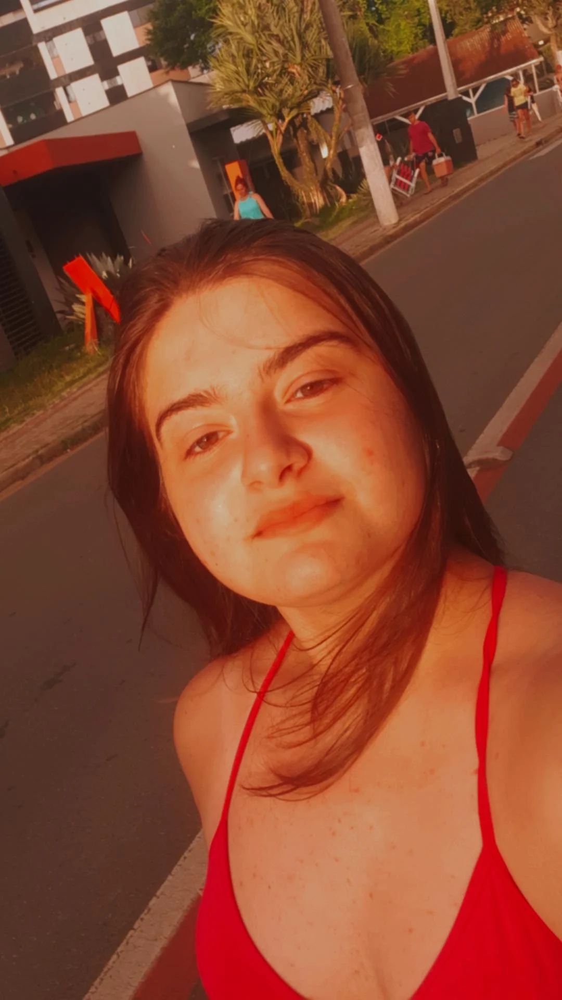
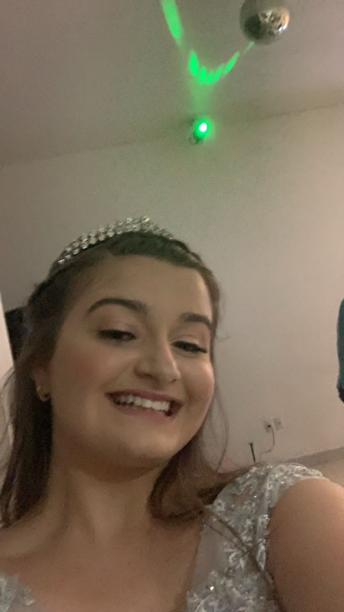

<!DOCTYPE html>
<html lang="pt-br">

<head>
  <meta charset="UTF-8">
  <meta http-equiv="X-UA-Compatible" content="IE=edge">
  <meta name="viewport" content="width=device-width, initial-scale=1.0">
  <title>This Is My Life </title>
  <link rel="shortcut icon" href="vermelho.ico" type="image/x-icon">

  <style>
    body {
      background-color: white;
      text-align: center;
      font-family: Garamond;
      font-size: 30px;
    }

    p {

      text-align: center;
      -webkit-text-stroke: 1px rgb(187, 4, 4);
      font-family: Courier New;
      font-size: 30px;

    }

    h1 {

      color: rgb(131, 10, 74);

    }

    img {
      border-color: rgb(100, 33, 33);
      border-style: solid
    }

   

    
  </style>


</head>

<body>

  <section>

    <div style="float: left">
      
    </div>

    <head>
     
</head>
<body>
    
</body>
</html>


      <h1>Essa é a minha vida &#x1F49E;</h1>


      <div class="cabecalho">
        <p>Meu nome é Maria Clara,tenho 15 anos e moro em Joinville.</p>
      </div>

      <a href="dance.html"></a>
      <p> Bom, sempre morei em Joinville, desde pequena sou muito hiperativa então minha mãe me colocou para fazer
        ballet,<br>
        não fiquei 1 ano, era algo muito parado então não gastava tanta energia assim, depois de um tempo comecei a
        fazer jazz e parei também, algo que também não fazia eu gastar toda a minha. <br> Uns anos depois eu voltei para
        dança e
        comecei a fazer danças urbanas| dança de rua, me encontrei! <br>
        Nunca fiz algo que eu gostasse tanto, fiz apresentações e participei de festivais, espero de verdade não sair
        tão
        cedo. <br>
        Meus maiores sonhos hoje são dançar no festival de dança de Joinville e me tornar policial, sim, policial
        Policia sempre foi algo que me chamou muita a atenção, as perseguições, as prisões, as investigações, e por
        conta
        disso e muito mais eu quero me tornar perita criminal ou investigadora cibernética. </p>

      
      

   
      <a href="dance.html">dance</a>
      <a href="fotos.html">Fotos</a>
      <a href="Filmes.html">Filmes</a>
  
</body>

</html>